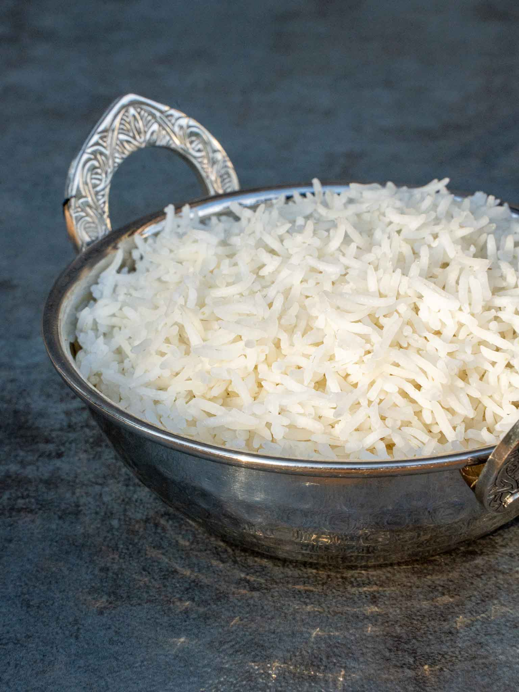

Basmati rice

Image from hungrylankan.com, recipe mine :)
Description
This recipe will be Basmati rice. I'll make the plain rice iteration. You can serve it with lots of different ways depending on your tastes!
Ingredients
- A cup of rice
- 2 cups of water
- Pepper
- Salt
- 3 table spoons of olive oil
Steps
- Rinse the rice with water. That way it will not be gooey when it gets cooked.
- Put the cup of rice in a pot.
- Add 2 cups of water in the pot.
- Add 3 table spoons of olive oil
- Sprinkle with pepper.
- Sprinkle with salt.
- Put the pot to the stove to start boiling.
- Once it starts boiling, turn down the heat and let it boil for 15 minutes.
- Turn off the heat, take the pot out of the heat and put a towel on top of it closing it's lid.
- Leave it like that for 3 minutes. We do this so the towel can absorb all the water of the rice, that will come out with steam.
- It's ready!